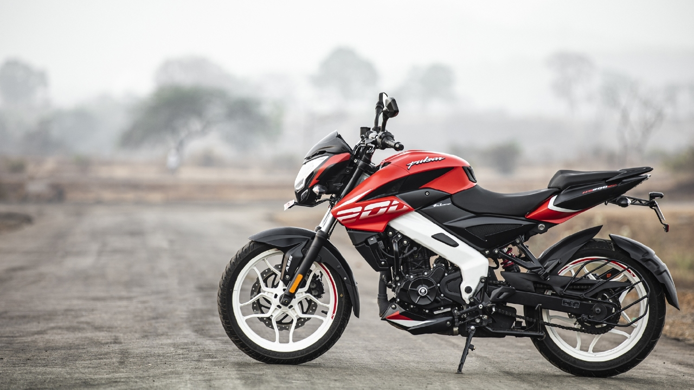

The Bajaj Pulsar NS200, previously known as Bajaj Pulsar 200NS is a sports bike made by Indian motorcycle manufacturer Bajaj Auto. The term NS stands for Naked sports. Wikipedia
Ex-Showroom Price: ₹99,533 - ₹1.37 lakhs
Fuel economy: 35 km/l
Max speed: 125 to 136 km/h
Curb weight: 152 to 156 kg
Seat height: 805 mm
Fuel tank capacity: 12 L
Color options: Graphite Black, Mirage White, Wild Red, Pewter Grey, Metallic Pearl White, Brunt Red, Satin-Blue, Fiery Yellow